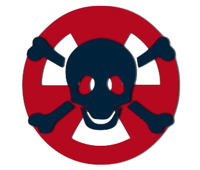

Luke Kemia

Luke Kemia is the big bad villan of the book. He is notorious for cheating in his competitions. Luke is not a nice young man. During the race against Jake Dash he tried to poison Jake's car. The chemical he put in Jake's car was called carcinous gas. He is a very sneaky person that can not be trusted. He likes all things bad, grungy, and dirty. After the race against Jake, Luke was disqualified from racing or competing ever again.
| Fun Facts | |
|---|---|
| His Logo: | Skull |
| Favorite Color: | Dirt Green |
| Favorite Villan: | Scar |
| Favorite Hobbies: | Boxing, Mudding, & Destroying |